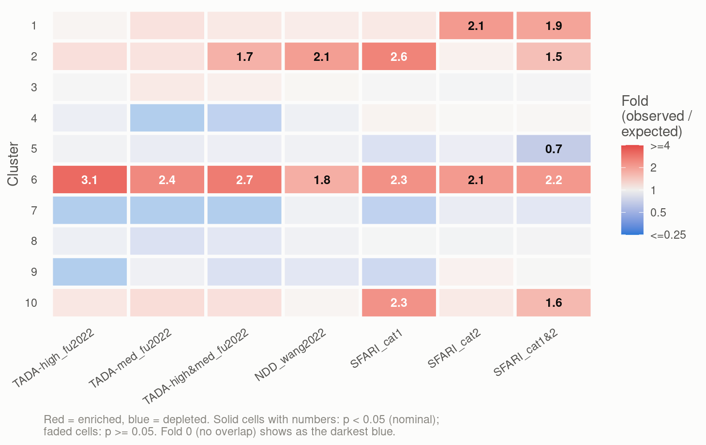
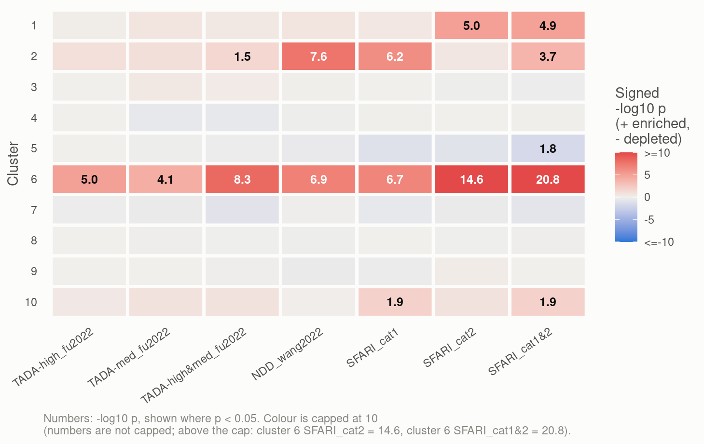

Last updated: 2026-11-17
Checks: 6 1
Knit directory: GLI-Hedgehog_Signaling/
This reproducible R Markdown analysis was created with workflowr (version 1.7.1). The Checks tab describes the reproducibility checks that were applied when the results were created. The Past versions tab lists the development history.
The R Markdown file has unstaged changes. To know which version of
the R Markdown file created these results, you’ll want to first commit
it to the Git repo. If you’re still working on the analysis, you can
ignore this warning. When you’re finished, you can run
wflow_publish to commit the R Markdown file and build the
HTML.
Great job! The global environment was empty. Objects defined in the global environment can affect the analysis in your R Markdown file in unknown ways. For reproduciblity it’s best to always run the code in an empty environment.
The command set.seed(20261117) was run prior to running
the code in the R Markdown file. Setting a seed ensures that any results
that rely on randomness, e.g. subsampling or permutations, are
reproducible.
Great job! Recording the operating system, R version, and package versions is critical for reproducibility.
Nice! There were no cached chunks for this analysis, so you can be confident that you successfully produced the results during this run.
Great job! Using relative paths to the files within your workflowr project makes it easier to run your code on other machines.
Great! You are using Git for version control. Tracking code development and connecting the code version to the results is critical for reproducibility.
The results in this page were generated with repository version f05ffef. See the Past versions tab to see a history of the changes made to the R Markdown and HTML files.
Note that you need to be careful to ensure that all relevant files for
the analysis have been committed to Git prior to generating the results
(you can use wflow_publish or
wflow_git_commit). workflowr only checks the R Markdown
file, but you know if there are other scripts or data files that it
depends on. Below is the status of the Git repository when the results
were generated:
Unstaged changes:
Modified: analysis/geneset_enrichment.Rmd
Note that any generated files, e.g. HTML, png, CSS, etc., are not included in this status report because it is ok for generated content to have uncommitted changes.
These are the previous versions of the repository in which changes were
made to the R Markdown (analysis/geneset_enrichment.Rmd)
and HTML (docs/geneset_enrichment.html) files. If you’ve
configured a remote Git repository (see ?wflow_git_remote),
click on the hyperlinks in the table below to view the files as they
were in that past version.
| File | Version | Author | Date | Message |
|---|---|---|---|---|
| Rmd | f05ffef | XSun | 2026-11-17 | update |
| html | f05ffef | XSun | 2026-11-17 | update |
| Rmd | 9d5589b | XSun | 2026-11-17 | update |
| html | 9d5589b | XSun | 2026-11-17 | update |
knitr::opts_chunk$set(echo = TRUE, warning = FALSE, message = FALSE)
suppressMessages({ library(ggplot2); library(DT) })
P <- "/project/xinhe/xsun/GLI-Hedgehog_Signaling"
GS <- file.path(P, "data/gene_sets")
r <- read.delim(file.path(P, "results/1.geneset_enrichment/enrichment_fisher.tsv"), check.names = FALSE)
cl <- read.delim(file.path(P, "data/gene_clusters/maSigPro_clusters_hgnc.tsv"))
gs <- read.delim(file.path(GS, "enrichment_gene_sets.tsv"), check.names = FALSE)
bg <- read.delim(file.path(GS, "background_protein_coding_hgnc.tsv"))
sf <- read.delim(file.path(GS, "SFARI_cat1_cat2_07-12-2026release.tsv"))
ndd <- read.delim(file.path(GS, "NDD_genes.tsv"))
set_order <- c("TADA-high_fu2022", "TADA-med_fu2022", "TADA-high&med_fu2022", "NDD_wang2022",
"SFARI_cat1", "SFARI_cat2", "SFARI_cat1&2")
r$gene_set <- factor(r$gene_set, set_order)
rc <- r[r$cluster != "all", ] # 10 clusters x 7 gene sets
rc$cluster_f <- factor(rc$cluster, rev(as.character(1:10))) # cluster 1 on top
pick <- function(k, s, v) r[r$cluster == k & r$gene_set == s, v]
f2 <- function(x) sprintf("%.1f", x)
pv <- function(p) ifelse(p >= 0.001, sprintf("%.3f", p), # p-value as text (ASCII)
formatC(p, format = "e", digits = 1))
fmt <- function(x) format(x, big.mark = ",", trim = TRUE)
# chart ink and colours (diverging: blue = depleted, gray = no change, red = enriched)
INK <- "#0b0b0b"; INK2 <- "#52514e"; MUTED <- "#898781"; GRID <- "#e1e0d9"; AXIS <- "#c3c2b7"
SURF <- "#fcfcfb"; BLUE <- "#2a78d6"; RED <- "#e34948"; MID <- "#f0efec"; ORANGE <- "#eb6834"
th <- theme_minimal(base_size = 11) +
theme(panel.grid = element_blank(), plot.background = element_rect(fill = SURF, colour = NA),
plot.title = element_text(colour = INK, face = "bold", size = 11),
strip.text = element_text(colour = INK, face = "bold", hjust = 0),
axis.text = element_text(colour = INK2), axis.title = element_text(colour = INK2),
legend.title = element_text(colour = INK2), legend.text = element_text(colour = INK2),
plot.caption = element_text(colour = MUTED, hjust = 0))GLI transcription factors mediate Hedgehog signaling, which shapes how neuronal progenitors differentiate. In this experiment, GLI is overexpressed and then perturbed or removed, and gene expression is measured over a time course. Genes that respond were grouped into 10 clusters by their expression pattern (maSigPro).
Hypothesis: genes that respond to GLI perturbation are enriched for genes implicated in neurodevelopmental disorders.
| Analysis | Approach | Status |
|---|---|---|
| Autism | Enrichment with SFARI genes (category 1, 2, 1&2) | done |
| Autism | High- vs medium-confidence TADA genes (Fu et al. 2022) | done |
| Neurodevelopmental disorders (NDD) | Enrichment with Wang et al. 2022 NDD genes | done |
All gene names were updated to current HGNC symbols. Only protein-coding genes are kept, to match the background. Most dropped genes are lncRNAs, antisense transcripts or pseudogenes.
k <- sort(unique(cl$cluster))
tab <- data.frame(cluster = k, genes_in_file = as.vector(table(cl$cluster)),
kept = as.vector(table(factor(cl$cluster[cl$kept], k))))
tab <- rbind(tab, data.frame(cluster = "total", genes_in_file = sum(tab$genes_in_file), kept = sum(tab$kept)))
knitr::kable(tab, col.names = c("Cluster", "Genes in file", "Protein-coding genes kept"),
format.args = list(big.mark = ","))| Cluster | Genes in file | Protein-coding genes kept |
|---|---|---|
| 1 | 560 | 503 |
| 2 | 1,090 | 1,030 |
| 3 | 900 | 852 |
| 4 | 388 | 357 |
| 5 | 998 | 965 |
| 6 | 1,626 | 1,539 |
| 7 | 290 | 273 |
| 8 | 361 | 347 |
| 9 | 236 | 213 |
| 10 | 387 | 354 |
| total | 6,836 | 6,433 |
def <- data.frame(
set = set_order,
source = c(rep("[Fu et al. 2022, *Nat Genet*](https://www.nature.com/articles/s41588-022-01104-0)", 3),
"[Wang et al. 2022, *PNAS*](https://www.pnas.org/doi/10.1073/pnas.2203491119)",
rep("[SFARI Gene](https://gene.sfari.org/), release 07-12-2026", 3)),
definition = c("TADA autism FDR ≤ 0.001", "TADA autism 0.001 < FDR ≤ 0.05",
"union of the two (Fu's 185 autism genes)",
"615 NDD genes: de novo enrichment, FDR < 5% in at least one model",
"score 1 (high confidence)", "score 2 (strong candidate)", "union of the two"))
def$n <- as.vector(table(factor(gs$gene_set, set_order)))
knitr::kable(def, col.names = c("Gene set", "Source", "Definition", "Protein-coding genes"), escape = FALSE)| Gene set | Source | Definition | Protein-coding genes |
|---|---|---|---|
| TADA-high_fu2022 | Fu et al. 2022, Nat Genet | TADA autism FDR ≤ 0.001 | 72 |
| TADA-med_fu2022 | Fu et al. 2022, Nat Genet | TADA autism 0.001 < FDR ≤ 0.05 | 113 |
| TADA-high&med_fu2022 | Fu et al. 2022, Nat Genet | union of the two (Fu’s 185 autism genes) | 185 |
| NDD_wang2022 | Wang et al. 2022, PNAS | 615 NDD genes: de novo enrichment, FDR < 5% in at least one model | 614 |
| SFARI_cat1 | SFARI Gene, release 07-12-2026 | score 1 (high confidence) | 242 |
| SFARI_cat2 | SFARI Gene, release 07-12-2026 | score 2 (strong candidate) | 706 |
| SFARI_cat1&2 | SFARI Gene, release 07-12-2026 | union of the two | 948 |
L <- lapply(setNames(set_order, set_order), function(s) gs$hgnc_id[gs$gene_set == s])
w <- ndd[ndd$source == "Wang2022", ]sets <- c("TADA-high_fu2022", "TADA-med_fu2022", "NDD_wang2022", "SFARI_cat1", "SFARI_cat2")
M <- outer(sets, sets, Vectorize(function(a, b) length(intersect(L[[a]], L[[b]]))))
dimnames(M) <- list(sets, sets)
knitr::kable(M, caption = "Shared genes between gene sets (diagonal = set size).")| TADA-high_fu2022 | TADA-med_fu2022 | NDD_wang2022 | SFARI_cat1 | SFARI_cat2 | |
|---|---|---|---|---|---|
| TADA-high_fu2022 | 72 | 0 | 60 | 64 | 5 |
| TADA-med_fu2022 | 0 | 113 | 48 | 44 | 25 |
| NDD_wang2022 | 60 | 48 | 614 | 140 | 83 |
| SFARI_cat1 | 64 | 44 | 140 | 242 | 0 |
| SFARI_cat2 | 5 | 25 | 83 | 0 | 706 |
Fisher’s exact test, two-sided, for each cluster × gene set. The 2×2 table compares the cluster with the rest of the background:
| in gene set | not in gene set | |
|---|---|---|
| in cluster k | a | b |
| rest of background | c | d |
Background: the whole genome, i.e. all 19,362 HGNC protein-coding genes. The question is whether cluster k is enriched relative to the genome.
Significance: nominal two-sided p < 0.05, not corrected for the 70 tests (about 3.5 would pass by chance). A two-sided test flags depletion as well as enrichment, so results always show the direction.
s <- rc[rc$p_value < 0.05, ]
v <- function(k, set) pick(k, set, c("overlap", "expected", "fold", "p_value"))
t6h <- v("6", "TADA-high_fu2022"); t6m <- v("6", "TADA-med_fu2022")
c2n <- v("2", "NDD_wang2022"); c2s <- v("2", "SFARI_cat1"); c2t <- v("2", "TADA-high&med_fu2022")
c1s <- v("1", "SFARI_cat2"); c10s <- v("10", "SFARI_cat1"); c5s <- v("5", "SFARI_cat1&2")h <- rc
h$l2 <- pmax(pmin(log2(h$fold), 2), -2) # fold 0 (no overlap) shows as the darkest blue
h$lab <- ifelse(h$p_value < 0.05, f2(h$fold), "")
h$lab_col <- ifelse(abs(h$l2) > 1.1, "#ffffff", INK)
h$alpha <- ifelse(h$p_value < 0.05, 1, 0.35) # fade cells with p >= 0.05
ggplot(h, aes(gene_set, cluster_f, fill = l2)) +
geom_tile(aes(alpha = alpha), colour = SURF, linewidth = 1.2) +
scale_alpha_identity() +
geom_text(aes(label = lab, colour = lab_col), size = 3.3, fontface = "bold") +
scale_colour_identity() +
scale_fill_gradient2(low = BLUE, mid = MID, high = RED, midpoint = 0, limits = c(-2, 2),
breaks = log2(c(0.25, 0.5, 1, 2, 4)), labels = c("<=0.25", "0.5", "1", "2", ">=4"),
name = "Fold\n(observed /\nexpected)") +
labs(x = NULL, y = "Cluster",
caption = paste0("Red = enriched, blue = depleted. Solid cells with numbers: p < 0.05 (nominal);\n",
"faded cells: p >= 0.05. Fold 0 (no overlap) shows as the darkest blue.")) +
th + theme(axis.text.x = element_text(angle = 35, hjust = 1), legend.key.height = unit(14, "pt"))
| Version | Author | Date |
|---|---|---|
| 9d5589b | XSun | 2026-11-17 |
Two-sided Fisher p-values, signed by direction: positive (red) if the cluster has more genes from the set than expected, negative (blue) if fewer. Numbers are shown where p < 0.05 (−log10 p > 1.3).
pc <- rc
pc$slp <- sign(log(pc$odds_ratio + 1e-12)) * -log10(pc$p_value) # signed -log10 p
pc$slp_c <- pmax(pmin(pc$slp, 10), -10)
pc$lab <- ifelse(pc$p_value < 0.05, f2(-log10(pc$p_value)), "")
pc$lab_col <- ifelse(abs(pc$slp_c) > 5.5, "#ffffff", INK)
cap <- pc[abs(pc$slp) > 10, ]
cap_txt <- if (nrow(cap)) paste0("; above the cap: ", paste0("cluster ", cap$cluster, " ", cap$gene_set, " = ",
f2(abs(cap$slp)), collapse = ", ")) else ""
ggplot(pc, aes(gene_set, cluster_f, fill = slp_c)) +
geom_tile(colour = SURF, linewidth = 1.2) +
geom_text(aes(label = lab, colour = lab_col), size = 3.3, fontface = "bold") +
scale_colour_identity() +
scale_fill_gradient2(low = BLUE, mid = MID, high = RED, midpoint = 0, limits = c(-10, 10),
breaks = c(-10, -5, 0, 5, 10), labels = c("<=-10", "-5", "0", "5", ">=10"),
name = "Signed\n-log10 p\n(+ enriched,\n- depleted)") +
labs(x = NULL, y = "Cluster",
caption = paste0("Numbers: -log10 p, shown where p < 0.05. Colour is capped at 10\n",
"(numbers are not capped", cap_txt, ").")) +
th + theme(axis.text.x = element_text(angle = 35, hjust = 1), legend.key.height = unit(14, "pt"))
| Version | Author | Date |
|---|---|---|
| f05ffef | XSun | 2026-11-17 |
All 70 cluster × gene set tests (background: all protein-coding genes; nominal two-sided p). Use the search boxes to filter.
tt <- rc[, c("cluster", "gene_set", "n_cluster", "n_set", "overlap", "expected",
"fold", "odds_ratio", "ci_low", "ci_high", "direction", "p_value", "overlap_genes")]
for (v in c("fold", "odds_ratio", "ci_low", "ci_high")) tt[[v]] <- round(tt[[v]], 2)
tt$p_value <- signif(tt$p_value, 3)
datatable(tt, filter = "top", rownames = FALSE,
options = list(pageLength = 15, scrollX = TRUE,
columnDefs = list(list(targets = ncol(tt) - 1, width = "300px"))))
sessionInfo()R version 4.2.0 (2022-04-22)
Platform: x86_64-pc-linux-gnu (64-bit)
Running under: Red Hat Enterprise Linux 8.10 (Ootpa)
Matrix products: default
BLAS/LAPACK: /software/openblas-0.3.13-el8-x86_64/lib/libopenblas_skylakexp-r0.3.13.so
locale:
[1] C
attached base packages:
[1] stats graphics grDevices utils datasets methods base
other attached packages:
[1] DT_0.22 ggplot2_3.4.2 workflowr_1.7.1
loaded via a namespace (and not attached):
[1] tidyselect_1.2.0 xfun_0.59 bslib_0.3.1 colorspace_2.0-3
[5] vctrs_0.6.1 generics_0.1.3 htmltools_0.5.7 yaml_2.3.5
[9] utf8_1.2.2 rlang_1.1.2 later_1.3.0 pillar_1.9.0
[13] jquerylib_0.1.4 glue_1.6.2 withr_2.5.0 lifecycle_1.0.4
[17] stringr_1.5.0 munsell_0.5.0 gtable_0.3.0 htmlwidgets_1.6.2
[21] evaluate_0.15 knitr_1.51 callr_3.7.0 fastmap_1.1.0
[25] crosstalk_1.2.0 httpuv_1.6.5 ps_1.7.0 fansi_1.0.3
[29] Rcpp_1.1.1-1.1 promises_1.2.0.1 scales_1.2.0 jsonlite_2.0.0
[33] farver_2.1.0 otel_0.2.0 fs_1.5.2 digest_0.6.29
[37] stringi_1.7.6 processx_3.5.3 dplyr_1.1.2 getPass_0.2-2
[41] rprojroot_2.0.3 grid_4.2.0 cli_3.6.2 tools_4.2.0
[45] magrittr_2.0.3 sass_0.4.1 tibble_3.2.1 whisker_0.4
[49] pkgconfig_2.0.3 ellipsis_0.3.2 rmarkdown_2.31 httr_1.4.8
[53] rstudioapi_0.14 R6_2.5.1 git2r_0.30.1 compiler_4.2.0